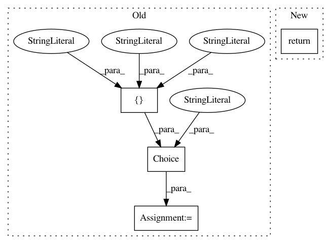

13aa31bc1a0b87d6c4b5e787c9b041ec83831c34,autokeras/blocks/reduction.py,SpatialReduction,build,#SpatialReduction#Any#Any#,106
Before Change
if len(output_node.shape) <= 2:
return output_node
reduction_type = self.reduction_type or hp.Choice("reduction_type",
["flatten",
"global_max",
"global_avg"],
default="global_avg")
if reduction_type == "flatten":
output_node = Flatten().build(hp, output_node)
elif reduction_type == "global_max":
output_node = layer_utils.get_global_max_pooling(
After Change
with hp.conditional_scope(REDUCTION_TYPE, [reduction_type]):
return self._build_block(hp, output_node, reduction_type)
else:
return self._build_block(hp, output_node, self.reduction_type)
def _build_block(self, hp, output_node, reduction_type):
if reduction_type == FLATTEN:
output_node = Flatten().build(hp, output_node)
In pattern: SUPERPATTERN
Frequency: 4
Non-data size: 4
Instances
Project Name: jhfjhfj1/autokeras
Commit Name: 13aa31bc1a0b87d6c4b5e787c9b041ec83831c34
Time: 2020-07-31
Author: jin@tamu.edu
File Name: autokeras/blocks/reduction.py
Class Name: SpatialReduction
Method Name: build
Project Name: jhfjhfj1/autokeras
Commit Name: 97d79f41b3f98dc75e536e00e8d4561851d8092a
Time: 2019-07-01
Author: jhfjhfj1@gmail.com
File Name: autokeras/auto/auto_model.py
Class Name: GraphAutoModel
Method Name: build